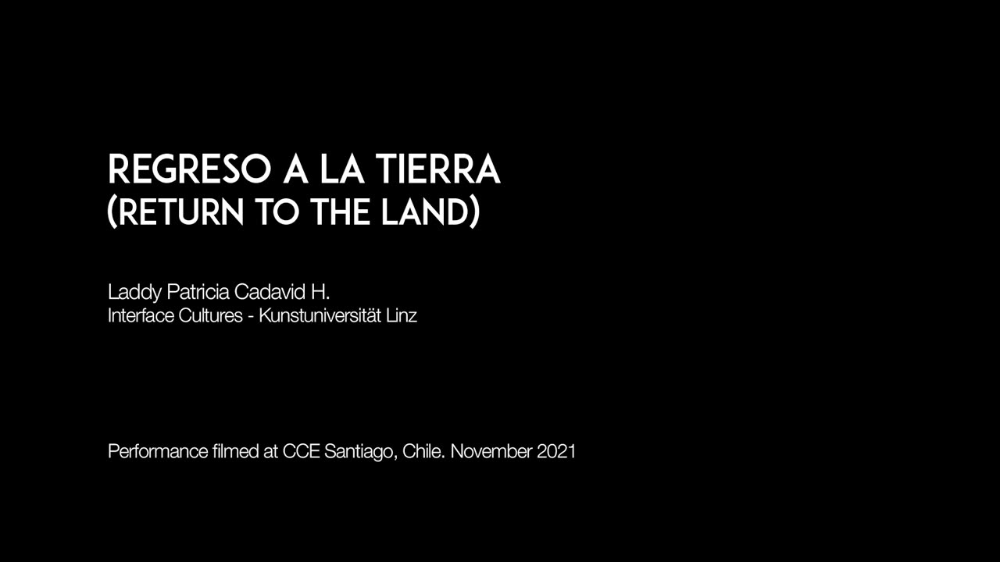
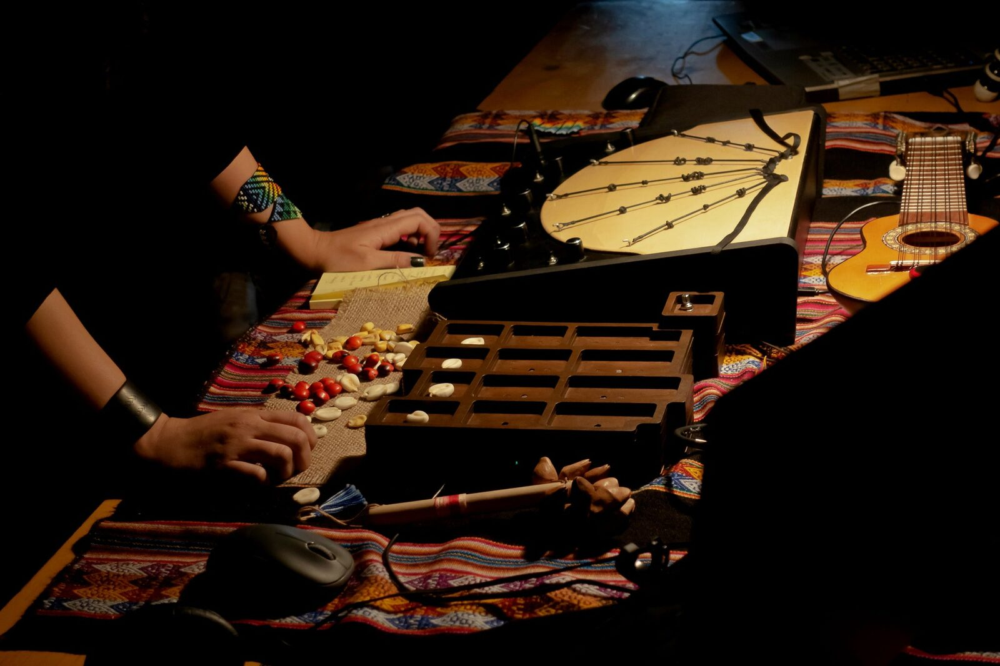
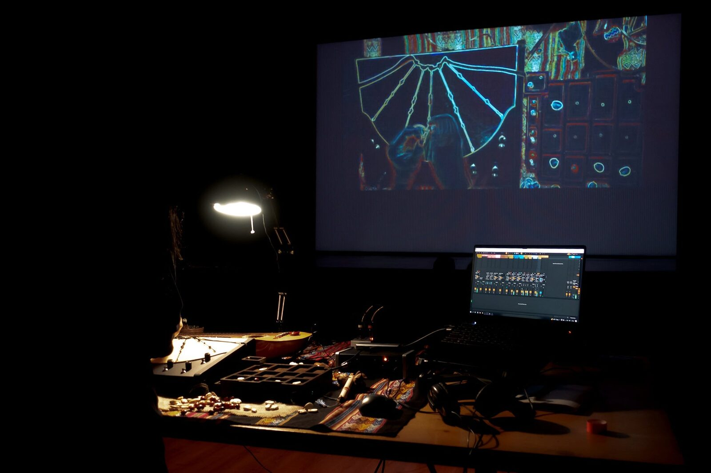
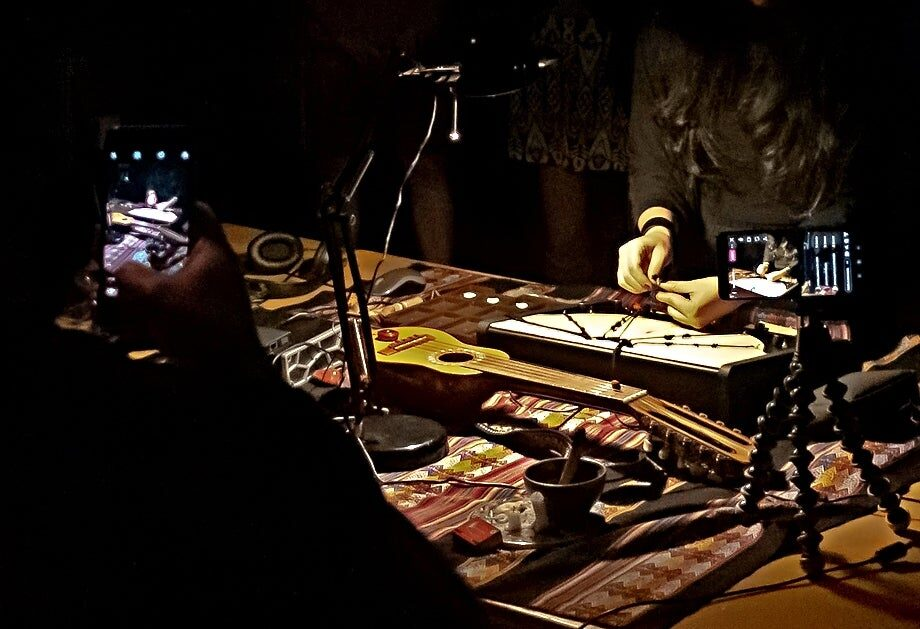

Regreso a la tierra (Return to the land)
Project Description
In the performance, "Regreso a la Tierra" (return to the land), the Electronic_Khipu_, a "NIME with a story" presented at the 2020 conference, is used for the first time, along with a new interface, the Kanchay_Yupana// an electronic tangible rhythm sequencer.
Both interfaces are inspired by pre-colonial Andean technologies, made invisible by the processes of colonization of Abya Ayala; The Khipu is an ancient textile computer used for the processing and transmission of information encrypted in knots and cords of cotton and wool. On the other hand, the Yupana, also known as the Andean abacus, is a tangible calculator based on the placement of seeds on boards divided into boxes used to perform arithmetic operations.
In ancient times the yupana complemented the khipu. The calculations that resulted from the use of the yupana were stored as information encoded in knots of the khipus. In this performance, as a ritual of gratitude, the performer continues the legacy using the same interaction, in this case, Kanchay_Yupana// (Yupana of light in the Quechua language) is played to mark rhythm by placing seeds in carved boxes with photoresistors that complement the experimental sound produced by the manipulation of the Electronic_Khipu_ when knotting its sensitive conductive rubber strings.
Both instruments want to generate a distinct experience for live performance and a reflection on the tools used in tangible live coding and electronic music, claiming the original technologies of the Andes braided in today's electronics from a decolonial perspective.
For this concert, I use sounds from the Kultrun, the Kaskawillas, and the Metawe from the sample library of Mapuche instruments of Juan Francisco Monsalve and Joaquín Salas.
Category
“NIMEs with a story” - dedicated to NIMEs that have been presented before. This includes new pieces for interfaces that have been previously presented at NIME or outside of NIME.
Program Notes
The performance Regreso a la Tierra (Return to the land) combines the experimental sounds of the Electronic_Khipu_, a rubber conductive strings MIDI controller presented at the 2020 conference, with the beats of the Kanchay_Yupana// a new rhythm sequencer based on an ancient Andean abacus.
The piece presented unites modern electronics and Latin American pre-colonial technologies, involving the audience in a sound ritual of payment to the land that inspires these sounds, and from which one wants to recover the legacy of a history made invisible by colonization.
“In this performance, for the first time, I am present with my live sound from the Andes that call me, from the origin, from Abya Yala. I will play the Kanchay_Yupana//, and I will knot my Electronic_Khipu_ in a sound session of gratitude to this land, and to the people who have welcomed me with so much love during the eclipsed moons of learning, births, encounters, returns, and affections during my time in Chile”.
Media
Video (also available at https://youtu.be/_dH3z52nRSo )

▶
Images






Ethics Statement
Previous instruments like the Kanchay_Yupana//, presented in past conferences with the same nature of interaction have shown important values and features in matters of accessibility and inclusion that although this was not the main objective of this project, can be exploited for future development.
The Kanchay_Yupana// has been designed to be an open-source Interface; however, the Teensy board is used whose development is not completely open, but it was chosen for its low cost (comparable to an Arduino) and advanced features that improve performance compared to an open-source board of similar category.
This project has been supported and funded by Cultura Resident, an artistic residency program of the Consorci de Museus de la Comunitat Valenciana in partnership with the Cultural Center of Spain in Santiago Chile. No conflict of interest has occurred.
Acknowledgements
Thanks to the Land, Natasha Pons, the CCESantiago team, and friends in Chile for their kindness and affection during my residence in Abya Yala, and Consorci de Museus de la Comunitat Valenciana for their support.